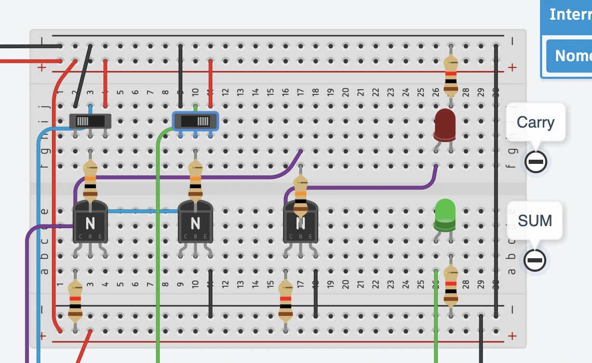
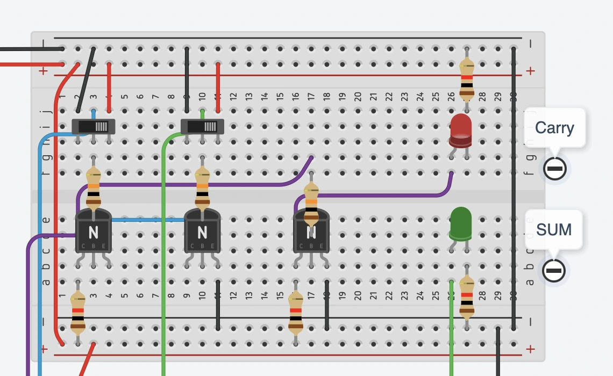
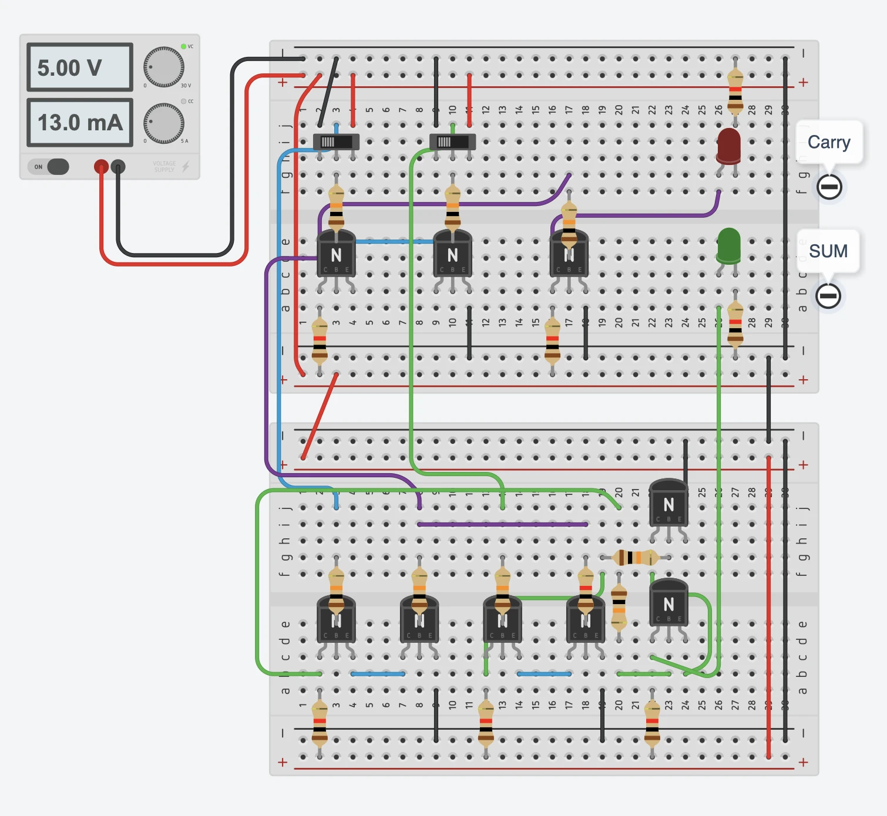

01 · Dos relés aos transístores
Depois da experiência com o somador de dois bits com seis relés, surgiu o interesse em testar uma solução baseada em transístores discretos. Se a montagem eletromecânica já exigiu algum trabalho, esta abordagem mostra que mesmo a soma de apenas um bit de cada número pode envolver uma quantidade considerável de componentes.
Um relé DPDT dispõe de dois conjuntos de contactos inversores. Já um transístor NPN funciona, neste contexto, como um interruptor eletrónico. Para reproduzir certas funções lógicas é necessário combinar vários transístores e resistências. Na configuração escolhida, foram utilizados nove transístores para um único meio somador. Não se trata de um número mínimo universal: existem outras topologias.
02 · O que se pretende calcular
Dois interruptores, identificados como B0 e A0, representam dois valores binários de um bit. Dois LEDs apresentam o resultado: o LED de peso 1 corresponde à soma (S) e o de peso 2 ao transporte (C, carry). Quando ambos os interruptores estão ligados, 1 + 1 resulta em 10, ou seja, dois em decimal.
C = B0 AND A0
O circuito é um meio somador: não recebe um transporte de entrada.
| B0 | A0 | Carry (2) | Soma (1) | Resultado |
|---|---|---|---|---|
| 0 | 0 | 0 | ||
| 0 | 1 | 1 | ||
| 1 | 0 | 1 | ||
| 1 | 1 | 2 |
A tabela reúne os estados lógicos esperados das duas saídas; não representa medições de tensão.
03 · Implementação
A configuração utiliza quatro portas NAND e uma inversora, implementadas com nove transístores NPN e resistências. A primeira tentativa, numa única breadboard grande, dificultou a identificação dos terminais e a resolução de erros de cablagem. A exportação do esquema também não refletiu as últimas alterações e, ao reabrir o projeto, parte do trabalho perdeu-se.
A montagem foi reiniciada em duas breadboards de 30 colunas. A primeira (P1) concentra os interruptores, a NAND inicial, a inversora e os dois LEDs. A segunda (P2) aloja as três NAND restantes. A alimentação comum é de 5 V; os interruptores selecionam massa à esquerda (0) e positivo à direita (1).
N2 = NAND(B0, N1)
N3 = NAND(A0, N1)
S = NAND(N2, N3)
C = NOT(N1)
Os transístores são muito mais pequenos e rápidos do que os relés, mas uma montagem discreta pode exigir mais componentes. Esta experiência ajuda a compreender a importância dos circuitos integrados.
04 · Testes e resultado
O transporte foi validado primeiro, isolando a P1. Depois de corrigida a convenção dos interruptores, montou-se a P2 e ligou-se a saída da soma ao LED verde. O funcionamento foi confirmado em simulação; as capturas seguintes mostram dois exemplos do resultado.




O resultado refere-se ao Tinkercad, não a uma montagem física ou à caracterização elétrica de todos os níveis lógicos.
05 · Consumo energético
Com a alimentação a 5,00 V, a fonte do Tinkercad indica 13,0 mA com as duas entradas a zero e ambos os LEDs apagados. Durante os testes, incluindo os estados com LEDs acesos, foi observado um consumo inferior a 15 mA.
| Condição | Corrente | Potência |
|---|---|---|
| Repouso (0 + 0) | 13,0 mA | 65 mW |
| Funcionamento (valores observados) | < 15 mA | < 75 mW |


Potência calculada por P = U × I. Os valores dizem respeito à simulação e não constituem medições de uma montagem física nem um limite máximo garantido.
06 · Evolução modular
O MK I é um meio somador, sem entrada de transporte. Uma evolução possível consiste em manter as duas placas e acrescentar um somador completo para o bit seguinte. A saída Carry do MK I passaria a alimentar a entrada Carry-in desse módulo.
Uma implementação convencional com nove NAND de duas entradas requer mais 18 transístores NPN, totalizando 27 para dois bits. O módulo adicional poderá ocupar uma breadboard de maiores dimensões, ou mais de uma placa se necessário. A extensão ainda não foi construída; será preciso testar a carga, a regeneração dos níveis lógicos e o funcionamento das saídas interligadas.
O objetivo é evoluir sem perder o trabalho já realizado, mantendo a abordagem didática e modular. O circuito emprega funções lógicas clássicas; a montagem e a simulação são uma adaptação experimental, não uma reivindicação de autoria da arquitetura lógica.